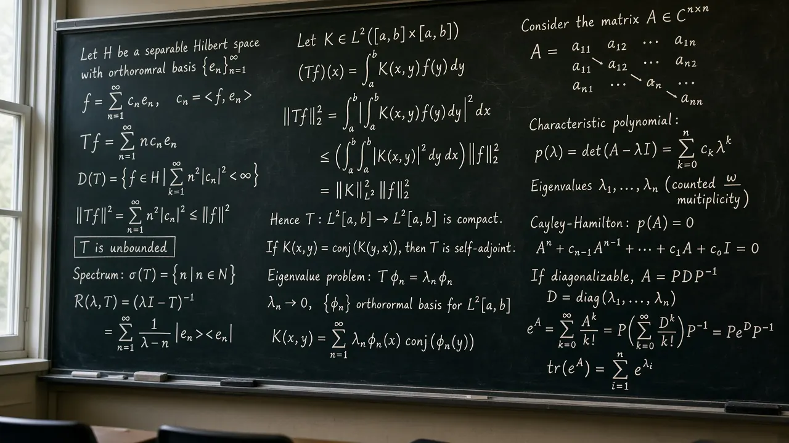

Free learning resource
Higher mathematics, explained without the fog
Higher Math Guide is a calm, original map of calculus, linear algebra, probability, analysis habits, and differential equations. The writing aims for intuition and precision, not jargon for its own sake.
Educational only
Original explainers
Free to read
A five step on ramp
Start here
If you are new to the site, walk these five doors in order. Each one is a free educational page, not a product pitch.
Step 1
Six topic maps that name the big ideas and point onward.
Step 2
Long original articles on sticky definitions and theorems.
Step 3
Short definitions with anchors you can jump to from any page.
Step 4
Browser tools after you can say what the number means. Exact algebra includes Gram Schmidt, Jacobian matrices, and LU factorization.
Step 5
Suggested study orders for calculus, linear algebra, and proofs.
The map
Six topic pillars
Start with any pillar. Each page stands alone and links to related explainers, pathways, calculators, and glossary terms.
Limits, continuity, derivatives, and integrals as tools for change and accumulation.
Partial derivatives, gradients, Jacobians, and how several variables interact in space.
Vectors, matrices, eigenvalues, and the geometry of linear maps.
Uncertainty, conditional probability, and how data updates beliefs.
Sequences, rigor, and how to write arguments that actually prove something.
A first look at equations that describe how systems evolve over time.
Long reads
Featured explainers
Original introductions to sticky ideas. Each piece includes outbound citations and links into topics, pathways, calculators, and the glossary. Five of them are highlighted here. Every explainer is listed in the next section.
Slope on a curve given by an equation, using the chain rule without solving for y.
The derivative of a map with several inputs and outputs, as a matrix.
Comparison, ratio, and root tests without treating them as magic spells.
Why the best value on a constraint is a tangency of level sets.
Circulation on a boundary and curl through a surface, for a first course.
Epsilon delta, derivatives, eigenvalues, Bayes, series, separable DEs, and more.
The long pages
Most used explainers
These are the long pages on the site. Each one stays with a single idea until you can say it back in plain words. For a map of a whole subject, open the topic pages. For an ordered route, the pathways page compares three study maps, including the linear algebra first course.
- Epsilon delta definition. How a tolerance on the output forces a window on the input, with a line, a quadratic, and a jump.
- What a derivative measures. What an instantaneous rate is, how the best local line sits against a graph, and when a corner means there is no derivative.
- Implicit differentiation. How the chain rule finds a slope when a curve is an equation and you have not solved for y.
- Sequences and infinite sums. An infinite sum as the limit of its partial sums, including geometric, harmonic, and telescoping cases.
- Convergence tests for series. When comparison, ratio, and root tests decide a series, and when each test stays silent.
- Separable differential equations. How to separate a slope equation, keep the constant solutions, and name where the formula stays valid.
- Jacobian matrices. The derivative of a map with several inputs and several outputs, written as one matrix.
- Lagrange multipliers. Why the best value on a constraint sits where two level sets are tangent.
- Stokes theorem. Why circulation around a rim equals the curl passing through a surface, for a first course.
- Eigenvalues. Lines a matrix stretches without turning, including a flip, a repeated root, and a complex pair.
- Bayes theorem. How to reverse a conditional, keep the base rate, and update a belief after new evidence.
In the browser
Interactive calculators
Type a small case and read the number against the definition. These tools run in your browser. They estimate, count, or solve. They do not write a proof. The same tools, grouped by subject, are on the calculators page.
- Epsilon delta finder. Searches for a numerical delta given a function, a point, a proposed limit, and epsilon.
- Numerical limit estimator. Samples a function as x approaches a point or infinity, so you can see whether the outputs settle.
- Numerical derivative. Estimates a slope at a point with a forward, backward, or central difference.
- Riemann sums. Approximates a definite integral with left, midpoint, or right rectangles.
- Partial fractions. Decomposes a rational function into exact partial fractions and writes the algebra steps.
- Second order differential equations. Solves a y'' + b y' + c y = 0 from the characteristic equation, including initial conditions.
- Wronskian. Builds the Wronskian matrix of two or three functions of x and reads the determinant for linear independence.
- Laplace transform. Transforms common functions of t, and inverts partial-fraction forms, with the table rule named at each step.
- Quadratic formula. Solves a quadratic equation and shows the discriminant and the roots.
- Gradient and directional derivative. Estimates partial derivatives, the gradient, and the slope in a direction you choose.
- Divergence and curl. Estimates how a vector field spreads and how it rotates at a point, in the plane or in space.
- Vector operations. Dot product, cross product, magnitude, and unit vectors in two or three dimensions.
- Gram Schmidt. Builds orthogonal vectors, unit vectors, and QR factors from two to four vectors, in exact fractions.
- LU decomposition. Factors a square matrix into L and U, with optional row exchanges and a solution of A x = b.
- Jacobian matrix. Differentiates a map of one to three formulas and writes the Jacobian determinant.
- 2 by 2 matrices. Determinant, inverse, and the two products of a pair of 2 by 2 matrices.
- 3 by 3 determinant and inverse. Cofactor expansion, the adjugate, and an exact fraction inverse, with the steps written out.
- Reduced row echelon form. Solves a system of linear equations by row reduction and shows every Gaussian elimination step in exact fractions.
- 2 by 2 eigenvalues. Finds the eigenvalues of a 2 by 2 matrix from its characteristic polynomial.
- 3x3 eigenvalues. Expands the characteristic polynomial of a 3 by 3 matrix and finds eigenvalues and a real eigenvector, with steps.
- Sequences and finite sums. The nth term and a finite sum for an arithmetic or a geometric sequence.
- Taylor and Maclaurin polynomials. Degree-n polynomial with exact coefficients, a derivative table, a Lagrange remainder bound, and a graph.
- Bayes theorem calculator. Computes a posterior from a prior, a likelihood, and the chance of the evidence when the hypothesis is false.
- Binomial probability. Counts combinations and the chance of a given number of successes in independent trials.
- Normal distribution calculator. Finds a normal probability from a mean, a standard deviation, and bounds, and converts between a z score and a percentile.
- Combinatorics. Permutations, combinations, and factorials, with a warning when the integers get too large for the calculation.
Practice and trust
Derivatives, Riemann sums, matrices, vectors, binomial and normal tools, sequences, and more. All in your browser.
Core terms with anchors for quick jumps from any page.
AP Calc AB bridge, linear algebra first course, and intro to proofs.
Directory of open notes, textbooks, and primary references cited on this site.
Mission, original content policy, and who publishes the site.
Prerequisites, how to use the site, calculators versus understanding, and contact expectations.
Common questions
What subjects does Higher Math Guide explain?
Calculus, multivariable and vector calculus, linear algebra, probability and statistics, real analysis and proof habits, and differential equations. Each topic page links to related explainers, pathways, calculators, and glossary terms.
How should I start?
Pick a topic pillar, read an explainer, check a glossary term, try a calculator after you can say what the number means, and follow a pathway if you want a suggested study order.
Do the calculators write a proof?
No. These tools run in your browser. They estimate, count, or solve. They do not write a proof.
This is a free educational project. If a page helped, if something looks wrong, or if you want a topic explained next, send a short note.
Contact Higher Math Guide
Disclaimer. This site is educational. It is not a substitute for a course, tutor, exam board materials, or professional advice. See the full
disclaimer.